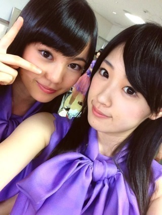
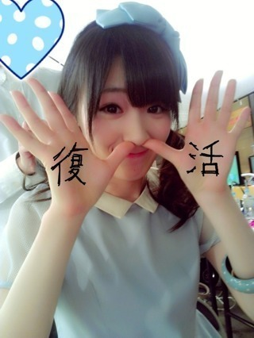

2013/0328Thu（´-`）.｡oO(か ずみん×152
こんばんは^ ^
沢山のコメントありがとう( ∩ˇωˇ∩)
やんちゃ高山の方が
人気だったかな(｀･ω･´)？
答えてくれた人、thanks☆
前回のブログで書いた、
初ソログラビアはUTBさんでしたっ♪
UTBさん、ありがとう(T_T)♡
ソロの仕事だと思うことが沢山あった。
とにかく楽しかったです(*∩ω∩)
あぁ、撮影は大好きです。
雑誌のお仕事は本当楽しい。
今回のUTBさんは
私の大好きな昭和レトロな感じに。
ぜひ、またよろしくお願いします！
発売前になったら、
またお知らせしますね！
あと、浜ちゃんが！
にも出演します(*ﾟﾛﾟ)!!
みなさん優しくて、本当にわいわいした
番組でした( *´艸｀)
ありがとうございました♪
OAは4月4日です！
他にまだまだ仕事が沢山！
ありがたいねぇ(T_T)
あかん警察は3月31日です！
みなさん見て下さい！
これからも頑張るぞ〜！
------
昨日、今日とライブもありました！
久々のステージ。
やっぱり楽しかったです！！
来てくださった皆さん、
ありがとうございました(>_<)
体調を崩している時、
家でモーニング娘。さんの
シャボン玉をずっと見てました。
やっぱミキティかっこいいな(>_<)、
今はさゆみん推しですが、
卒業するまではミキティが好きで。
見ていて参考になりました。
今日はみなみの代わりに市來先生!!
ついでに生田社長も。笑笑

お疲れ様でした(^^)
あ！市來先生ファンの皆さん、
れなりんはパソコンが今壊れたらしくて
ブログが書けないそうです(T_T)
早くなおりますように...！
でも元気なので安心してね♪
それでは、今日はこの辺で。
みんないつもありがとう。
お休みなさい( ´ ▽ ` )ﾉ
2013/0323Sat（´-`）.｡oO(か ずみん×感謝!!!
みなさんからの温かいメッセージ、
励ましの言葉、凄く嬉しかったです！
パワーになりました！
ありがとうございました。
沢山の方々に助けてもらったおかげで、
体調はずいぶんと良くなりました(T_T)
薬の副作用もあって、
ずーっと寝てたら回復したようです。
良かった( ∩ˇωˇ∩)
ご心配おかけしました。
歌えるまであとちょっとかな〜(´･ｪ･｀)
喋れるようにはなったよ。
着々とお仕事も再開しました！
あと残りは薬が効くのを待ちます...！
今日のガールズアワードは
残念ながら出れなかったのですが、
来週からライブは出ますよ！
毎日お仕事＆やること沢山っ！
頑張るぞ！！
しばらく地声は本当お預けにします。笑
ミュージックフェアのトークの時は
三浦祐太朗さんに百恵ちゃんのお話を
させていただいたので
声を低くしようと気をつけました。笑
あ、でもでも
ダウンタウンDXの時、
空き時間にソフィアの松岡さんが
裏声での喋り方は
喉に負担がかからなくて凄くいいと
言って下さったので、
嬉しかったです(^.^)
裏声にもファルセットとか
色々あって、ちょっと可愛く
出したい時とか、声をはりたい時とか...
まあ長いのでいつか機会があれば♪
----------
あと相方の陽菜ちゃんbirthdayだった♡
今日パーティやったみたいだけど
高山はいれなくて残念...
陽菜ちゃんってさ〜
なんか大人っぽいからかな、
早生まれじゃないっぽいよね！笑
陽菜ちゃんの生誕祭収録
めっちゃ面白かったよ( *´艸｀)
最近の乃木どこで一番笑った！！
さすが陽菜ちゃん！
恐ろしい15歳です( *´艸｀)
相方これからもよろしくね〜♪
-------
明日は初かな、
ソログラビア(*ﾟﾛﾟ)!!
やったー＼(^o^)／
やったー＼(^o^)／♪
楽しみです( *´艸｀)
でも張り切りすぎて
またぶり返さないようにしなくては！
それでは、この辺で...
本当に皆さん、
ご心配おかけしました。
ありがとうございました！
これからもよろしくね(T_T)

↑↓やんちゃ高山とキリッと高山
皆さんどっちが好き...？
それでは、お休みなさい...☆
2013/0319Tue申し訳ない気持ちでいっぱい
こんばんは。
先ほど発表がありました通り、
私は明日の全国握手会には出れません。
楽しみにしてくれてた皆さん、
本当にごめんなさい...
個別握手会から咳が
止まらなくなってしまって、
昨日、病院に行き検査しました。
一周年ライブの前から
ずっと咳が治らないと思ったら
気管支炎喘息やアレルギーが
続いて重なっていて、
忙しい期間だったために身体が休めず、
こじらせてしまっていたみたいです。
すぐには難しいそうですが、
薬でちゃんと治るようなので頑張りますね。
あぁ、情けない。
本当情けない、自分。
明日はチャリティライブもあって...
私は復興支援のために
何もしてあげれないのか...
乃木坂のためにも何もできない。
メンバーには本当申し訳ない気持ちで
いっぱいです。
私が出ないと、私の代わりに誰がが
入らなくてはいけない。
ポジションとか歌割とか
覚えるの大変なのにごめんね。
みんな頑張ってるのに、
私だけ頑張れなくてごめんね。
身体は休まっても
気持ちは休まらないんだなぁと
思いました。
心が苦しくなります。
悔しいな。早く治れ。
良かったらみなさんも回復を
応援してくれると嬉しいです。
一刻も早く、、頑張ります。
先ほど発表がありました通り、
私は明日の全国握手会には出れません。
楽しみにしてくれてた皆さん、
本当にごめんなさい...
個別握手会から咳が
止まらなくなってしまって、
昨日、病院に行き検査しました。
一周年ライブの前から
ずっと咳が治らないと思ったら
気管支炎喘息やアレルギーが
続いて重なっていて、
忙しい期間だったために身体が休めず、
こじらせてしまっていたみたいです。
すぐには難しいそうですが、
薬でちゃんと治るようなので頑張りますね。
あぁ、情けない。
本当情けない、自分。
明日はチャリティライブもあって...
私は復興支援のために
何もしてあげれないのか...
乃木坂のためにも何もできない。
メンバーには本当申し訳ない気持ちで
いっぱいです。
私が出ないと、私の代わりに誰がが
入らなくてはいけない。
ポジションとか歌割とか
覚えるの大変なのにごめんね。
みんな頑張ってるのに、
私だけ頑張れなくてごめんね。
身体は休まっても
気持ちは休まらないんだなぁと
思いました。
心が苦しくなります。
悔しいな。早く治れ。
良かったらみなさんも回復を
応援してくれると嬉しいです。
一刻も早く、、頑張ります。
2013/03/19 22:00｜個別ページ｜コメント(1198)
2013/0318Mon（´-`）.｡oO( 大丈夫だよね
いつも応援ありがとうございます。
先日の握手会では途中で気管支炎が
悪化してしまい、すみませんでした。
実は一ヶ月前から治っておらず、
収録の時はぎりぎりまで飴をなめて
ないと咳が止まらない状態でした。
凄く忙しい期間に発症してしまい
なかなかゆっくりと休養がとれなかったため、
咳が完治できなかったみたいです。
仕事をいただけるのがありがたくて
周囲にも中々言えず、
結果症状を長引かせてしまいました。
大好きな歌が、ずっと歌えなくて、
本当に辛かったです...
このまま歌えなかったら...とか考えて
泣いた日もありました。
皆さんを心配させてしまって
本当にすみません(T_T)
身体は元気なのですよ！咳だけね。
あぁ、昔から気管が弱くて困る(T_T)
アイドルなのに情けないです。
本当にすみません...
明日、母と病院に行ってきました。
早く治すぞ〜！！
大切なファンの皆さんへ
完治するように
応援してくれると嬉しいです。
ごめんね。
頑張るぞ！！ポジティブ！！
先日の握手会では途中で気管支炎が
悪化してしまい、すみませんでした。
実は一ヶ月前から治っておらず、
収録の時はぎりぎりまで飴をなめて
ないと咳が止まらない状態でした。
凄く忙しい期間に発症してしまい
なかなかゆっくりと休養がとれなかったため、
咳が完治できなかったみたいです。
仕事をいただけるのがありがたくて
周囲にも中々言えず、
結果症状を長引かせてしまいました。
大好きな歌が、ずっと歌えなくて、
本当に辛かったです...
このまま歌えなかったら...とか考えて
泣いた日もありました。
皆さんを心配させてしまって
本当にすみません(T_T)
身体は元気なのですよ！咳だけね。
あぁ、昔から気管が弱くて困る(T_T)
アイドルなのに情けないです。
本当にすみません...
明日、母と病院に行ってきました。
早く治すぞ〜！！
大切なファンの皆さんへ
完治するように
応援してくれると嬉しいです。
ごめんね。
頑張るぞ！！ポジティブ！！
2013/0314Thu（´-`）.｡oO(かずみん×148
こんばんは。
いつも応援ありがとうございます！
受験シーズンはそろそろ終わり、
春がはじまりそうですね。
同級生、遠くのクラスの子でしたが、
受験のいい知らせが耳に入って来て
嬉しくなりました^^
私が高校で勉強を頑張らなかった時に
先生がその子を見習えと...´д` ;ううっ
向こうは私を知らないと思いますが
私が勝手に尊敬してました。笑
頭がいい人って憧れる(u_u)
努力してる人ってもっと尊敬する！
私ももっと吸収しなくては(>_<)
--------
昨日は5thシングル発売日でした(*^^*)
感想待ってます！
撮影秘話でいうと...
まずシャキイズムは男役。
ちなみに相手は偶然川後の陽菜ちゃん！
ダンスの先生がランダムに選んでた
のですが、たまたま陽菜ちゃんに！
決まった瞬間は2人ともキャーとか
可愛い声は出さず、
よっしゃあ！みたいなクールなノリ♪笑
ちなみにかず男は休憩時間

PSPでデジモンを
ひたすらやってました！笑
本当に男子高校生みたいだと
周りからは言われてたよ(￣▽￣)
撮影中はじょーさん(のうじょう様)と
2人で小芝居したり...
だけど演技が大げさすぎたみたいで
1回注意されました。笑
ダンスシーンもジョーさんと隣で
ずっと笑ってました！！
PVで見つけるのは困難な
かず男ですが、ぜひ
探してみて下さい！笑
デコピンは本当に嬉しかったです。
ユニットに選んでもらえる時って
本当に...本当に嬉しい。
偶然を言い訳にしての時より、
何倍も成長した(と思わせて下さい.笑)
高山を見てほしいです。
また今度写真載せますね♪
-------
それでは今日はこの辺で(^^)
今日も花粉症辛すぎた(>_<)
明日も頑張るぞ〜！！

終わり。